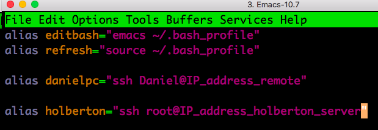

Toot toot toroot toot: SSH on my windows PC at home!
Cygwin is a linux emulator for Windows that works as an SSH server (with the OpenSSH package) and can serve other operating systems. Now that I am in San Francisco, I can access my computer desktop in New York from the command line... just like the server on this website! I have spent probably too much time configuring and playing around with it, but that only means I have learned a few things to fill this page with :)
Aliases
After installing cygwin and openSSH, I was able to remotely connect to my computer at home. But one thing that I realized is that I cannot remember the IP address of my computer at home every time I want to log in.
This is where aliases come into play. I discovered that I can have aliases for frequent commands both on my local MacBook laptop as well as on the remote machine.
On my local MacBook
On my MacBook Air with OS X El Capitan 10.11, I modified my '.bash_profile' file. The file can be accessed with Emacs with the following command:
emacs ~/.bash_profile
On my remote Windows 7
For some reason, what worked above did not work remotely on Cygwin. I figured out that you have to modify a different file, and everything works after that :) I edited a file called '.bashrc' using Emacs. The command to do this is as follows:
emacs ~/.bashrc
My bash aliases
This is what my bash file looks like. I can now log into the holberton server and to my home server without having to look up the IP addresses on my machines!
After saving the changes and closing and re-opening my terminal windows, I can simply type "holberton" into the terminal and I will be taken straight onto my Holberton Level 2 website. :)
SSH keys, to avoid remembering the password!
Unfortunately, we cannot change the root password on this challenge, and the password is impossible to remember! I have to copy and paste the password every time I log in to the Holberton server. There is way to avoid the password altogether using SSH keys!
I got an SSH key I generated to work with my computer at
home, but I spent way too much time doing this and so I
am pressed for time to finish the challenge and won't be
able to explain it at this point.
The Secure SHell (SSH) can work with different encryption types. The one we will use is RSA.
How SSH-RSA encrypted keys work to authenticate you
There are two keys. One that encodes (public key), and one that decodes (private key). The public key is not capable of decoding, and it can be generated from the private key. Think of the private key as a "master" key. It is able to lock and unlock. The public key can only lock.
If you don't have these, don't worry, that just means you need to generate them. The folllowing section shows you how.
Generating keys
First, we create a private key. Then, we generate a public key from the private key. The following command will do both.
ssh-keygen -t rsa
At each prompt, just leave blank and press Enter. Now you have your pair of private and public keys!
Using your keys with your server
Now that you have generated your keys, you can put them to use.
Your private key can be found in the local ~/.ssh/ directory. cd into it, and run ls. Your private key will be called id_rsa. Your public key is there as well, called id_rsa.pub.
Open up another terminal (let's call it terminal 2), and log in to your remote server. Personally, I will log in to my remote Windows PC with Cygwin installed, but these commands work on Linux as well.
First, on terminal 2, cd into the remote server's ~/.ssh directory. If it doesn't exist, use mkdir to make it. In this directory, we will create a file called 'authorized_keys'. To do this, run the following command:
emacs authorized_keys
This is where your public key will go (follow the steps below). Remember, this will allow you to log in to your remote server without a password, so make sure no one has stealthily installed another key in there (make sure the file is blank). Keep emacs open.
On terminal 1, cd into your local ~/.ssh directory. Run emacs, copy the contents of the public key file (id_rsa.pub) onto the file in terminal 2, and save it. Yes, good ol' copy and paste. :)
You are done. You can now log into your server without a password!
Post Scriptum
You might be wondering what would happen if you had a private key already but you either lost your public key or never had it in the first place. Turns out you can generate a private key from a public key by specifying the -y option on ssh-keygen. Run 'man ssh-keygen' for information on how to do this.
Resources
http://www.w3schools.com/tags/tag_pre.asp
http://getgrav.org/blog/mac-os-x-apache-setup-multiple-php-versions
https://www.digitalocean.com/community/tutorials/how-to-set-up-ssh-keys--2
http://askubuntu.com/questions/53553/how-do-i-retrieve-the-public-key-from-a-ssh-private-key
http://curiositalabs.com/2013/03/how-to-style-your-code-snippets/
http://www.w3schools.com/cssref/css_units.asp